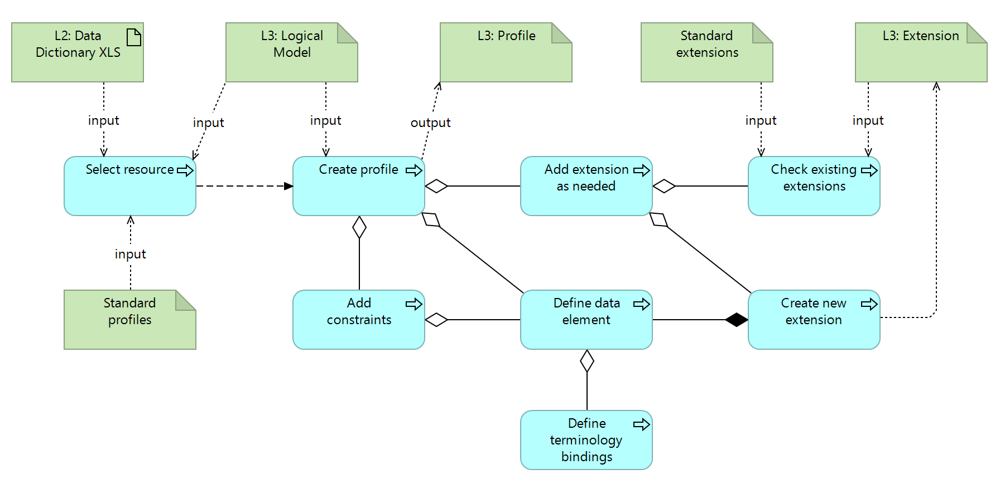

DRAFT SMART Guidelines L3 SOP
0.2.1 - CI Build

DRAFT SMART Guidelines L3 SOP
0.2.1 - CI Build

DRAFT SMART Guidelines L3 SOP, published by WHO. This guide is not an authorized publication; it is the continuous build for version 0.2.1 built by the FHIR (HL7® FHIR® Standard) CI Build. This version is based on the current content of https://github.com/WorldHealthOrganization/smart-ig-starter-kit and changes regularly. See the Directory of published versions
Profiles are the FHIR representation of the data objects. They include constraints and extensions. Profiles and extensions should be reusable as much as possible, and L3 authors should should aim for reusing reusable profiles/extensions and for creating profiles/extensions that can be reused by others.
Profiles include Element constraints or extensions, and may include constraints:
The inputs for creating a profile, extensions and constraints are:
input/profiles or input/fsh/profilesinput/extensions or input/fsh/extensionsinput/examples or input/fsh/examples
The FHIR profiles are determined by the need for information objects from the definitions:
The L3 author consults the logical models and the business processes to see which profiles are necessary.
The L3 Author shall search the common profiles repository to search for profiles that may exist which either
This search is in related sources - within the the SMART Guidelines ecosystem - or even outside, such as IHE or HL7 or national guidance. In these cases, the L3 author shall apply the necessary validation as the profiles may not meet the expectations or may change without warning.
The recommended priority for the search for existing profiles and extensions:
| Tool | Usage | Doc |
|---|---|---|
| Sushi | Profiles can be authored in FSH syntax | HL7 Spec Sushi Documentation |
SMART Guidelines - Immunizations (Measles): Profiles SMART Guidelines - Immunizations (Measles): Extensions